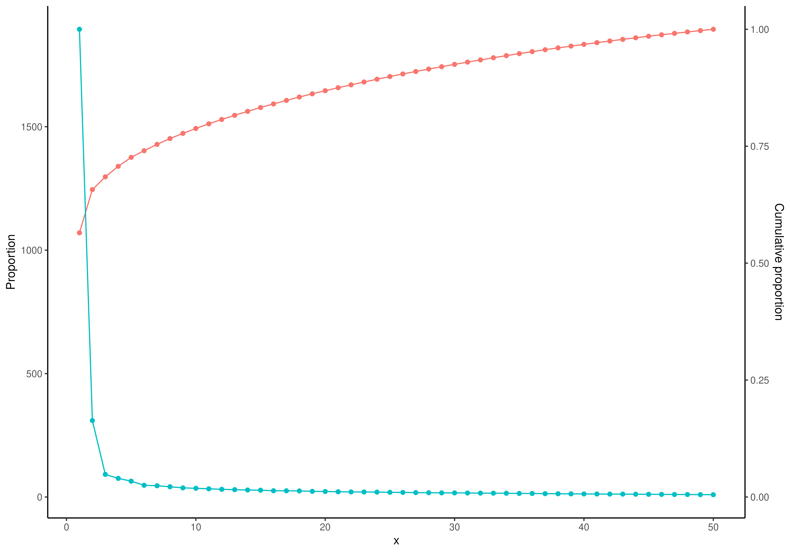

plotScree generates a scree plot to visualize the eigenvalues.
The eigenvalues can be provided either as a part of a
TreeSummarizedExperiment object or as a separate vector.
This plot illustrates the decline in eigenvalues across components,
helping to assess the importance of each component.
plotScree(x, ...)
# S4 method for class 'SingleCellExperiment'
plotScree(x, dimred, ...)
# S4 method for class 'ANY'
plotScree(x, ...)a
TreeSummarizedExperiment
eigenvals or a vector.
additional parameters for plotting
show.barplot: Logical scalar. Whether to show a
barplot. (Default: TRUE)
show.points: Logical scalar. Whether to show a
points. (Default: TRUE)
show.line: Logical scalar. Whether to show a
line. (Default: TRUE)
show.labels: Logical scalar. Whether to show a
labels for each point. (Default: FALSE)
add.proportion: Logical scalar. Whether to show
proportion of explained variance, i.e., raw eigenvalues.
(Default: TRUE)
add.cumulative: Logical scalar. Whether to show
cumulative explained variance calculated from eigenvalues.
(Default: FALSE)
n: Integer scalar. Number of eigenvalues to plot.
If NULL, all eigenvalues are plotted. (Default: NULL)
show.names: Logical scalar. Whether to show names of
components in x-axis. If FALSE, the index of component is shown
instead of names. (Default: FALSE)
eig.name: Character scalar. The name of the attribute
in reducedDim(x, dimred) that contains the eigenvalues.
(Default: c("eig", "varExplained"))
Character scalar or integer scalar. Determines
the reduced dimension to plot. This is used when x is a
TreeSummarizedExperiment to extract the eigenvalues from
reducedDim(x, dimred).
A ggplot2 object
plotScree generates a scree plot to visualize the relative importance
of components in dimensionality reduction techniques such as Principal
Component Analysis (PCA) or Principal Coordinate Analysis (PCoA). If the
input is a TreeSummarizedExperiment object, the function extracts
eigenvalues from the specified reduced dimension slot, which requires that
dimensionality reduction has been performed beforehand using a dedicated
function. Alternatively, if the input is a vector or an
eigenvals object, these values are directly used as eigenvalues for
the plot.
The plot can include a combination of barplot, points, connecting lines,
and labels, which can be controlled using the show.* parameters.
An option to show cumulative explained variance is also available by setting
add.cumulative = TRUE.
library(miaViz)
library(scater)
data("enterotype", package = "mia")
tse <- enterotype
# Run PCA and store results into TreeSE
tse <- transformAssay(tse, method = "clr", pseudocount = TRUE)
#> A pseudocount of 5e-09 was applied.
tse <- runPCA(tse, assay.type = "clr")
# Plot scree plot
plotScree(tse, "PCA", add.cumulative = TRUE)
